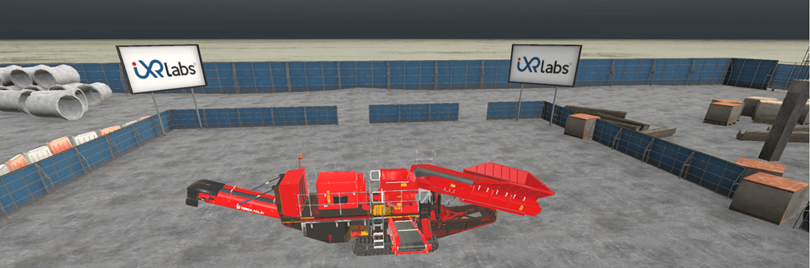

When it comes to teaching complex machinery, traditional classroom methods often fall short. Crushing equipment, like jaw crushers and cone crushers, is a critical topic in mining and civil engineering programs. But how do you teach students to handle heavy and high-risk machines without compromising safety?
The answer lies in immersive and interactive learning. VR crushing equipment training is emerging as a transformative tool for engineering education. It not only makes learning safer, but it also makes it smarter.
What is VR Crushing Equipment Training?
Virtual reality jaw crusher and VR cone crusher models are high-fidelity simulations that allow students to interact with crushers in a risk-free digital environment. These modules are designed to mirror the structure and functionality of real machines, which gives students a complete view of the equipment, and that too from inside and out.
In a virtual crusher plant walkthrough, students can:
● Observe every component in 3D.
● Simulate operations with guided instructions.
● Interact with moving parts to understand mechanics.
● Practice maintenance procedures virtually.
This approach creates a lab-like setting without requiring physical space or costly equipment.
Why Crushing Equipment Training Matters
Crushing equipment plays a key role in industries like construction, mining, and road building. A solid understanding of how these machines work is essential for engineering students. However, working with actual crushing equipment comes with safety hazards and logistical limitations.
● Machines are expensive and not always available for training.
● Real-life practice sessions involve risk.
● Misunderstanding machine mechanics can lead to accidents.
That’s where 3D crusher simulation and VR crusher simulation come in.
Exploring the Key Crushers with VR Training
1. Jaw Crusher
A jaw crusher is used for primary crushing. It works by compressing materials between a fixed jaw and a moving jaw. It’s crucial for breaking down large rocks.
How VR Helps:
Understanding how the toggle plate, pitman, and flywheel interact demands more than just observation. VR lets students virtually disassemble and reassemble the jaw crusher - seeing how and why each part moves, not just that it moves.
In VR, educators can pause, annotate, rotate, and zoom in on specific parts during a live session—things that videos and photos simply don’t allow.
Interactive modules keep learners more engaged than passive content. Multiple studies show that active learning leads to better retention and performance, especially in complex mechanical systems.
Through virtual reality jaw crusher training, they can simulate blockages, toggle failures, and safe operation procedures.
2. Cone Crusher

Cone crushers are used for secondary or tertiary crushing. They crush materials by squeezing them between an eccentrically gyrating spindle and a concave hopper.
How VR Helps:
VR allows learners to navigate around the crusher, observe eccentric motion from multiple angles, and follow material flow dynamically through different stages—creating true spatial understanding.
● VR can visually demonstrate how improper lubrication leads to wear over time and allows learners to interact with the system to see cause-effect relationships in real time
● In VR, students can toggle between both types instantly, zoom into key differences, and even see performance simulations—leading to better conceptual clarity and retention.
● For learners who may never interact with a real crusher, VR brings authentic, tactile-like experiences that make technical theory tangible and applicable, raising both confidence and competence.
3. Mobile Crushers
Mobile crushers are compact, track-mounted units used in field-based operations for rapid deployment.
How VR Helps:
● Students can perform virtual training for mobile crushing units, including transportation setup and field deployment.
● Scenarios include remote operation and emergency response simulations.
● Helps teach space management and site-specific customizations.
Through VR for mobile crushing, institutions can prepare future engineers for on-site realities.
4. Gyratory Crusher
Often used in large-scale mining operations, gyratory crushers can handle heavy-duty workloads. They crush material through a central conical spindle within a fixed outer shell.
How VR Helps:
● Students explore large-scale industrial equipment without physical exposure.
● Simulation provides clarity on feed zones, concave liners, and rotational dynamics.
● Educators can break down multi-stage crushing processes.
How VR Helps Students Understand Crushing Equipment
Understanding the working of crushers requires more than just theory. Concepts like feed mechanism, crushing chamber angles, and stress distributions are easier to grasp when visualized.

Through interactive VR cone crusher demos and jaw crusher walkthroughs, students can:
● Zoom in on internal mechanisms.
● View cutaway models.
● Perform guided assessments.
● Identify faults and maintenance points.
This depth of interaction sharpens both conceptual and operational understanding.
Benefits of VR in Crushing Equipment Education
1. Safety First
● Students learn without risk.
● Mistakes become part of learning, not danger.
2. Cost-Efficient
● No need for physical machines.
● Reduces need for consumables and spare parts.
3. Anytime, Anywhere Access
● Virtual modules can be accessed on desktops, VR headsets, and tablets.
● Makes remote and hybrid learning more effective.
4. Improved Learning Outcomes
● 74% of students showed better retention when using VR-based training versus textbooks, according to a study by PwC.
5. Industry-Relevant Skills
● Aligns with real-world applications.
● Prepares students for site conditions and safety norms.
Building a Virtual Lab for Crushing Equipment in Civil Engineering
Setting up a virtual lab for civil engineering departments can be done in a few simple steps:
1. Select Modules: Jaw crushers, cone crushers, gyratory crushers, and mobile crushers.
2. Deploy on Campus: Use VR headsets or standard PC labs.
3. Integrate into Syllabus: Link with topics in mechanical design, safety engineering, and materials processing.
4. Evaluate Performance: Use built-in assessment tools.
Institutions can also allow students to create reports based on their simulation experiences, boosting hands-on learning even further.
A Smarter Way Forward
Traditional methods often require large lab spaces, expensive equipment, and high safety protocols. With VR crushing equipment training, all these challenges can be addressed.
Final Thoughts
Engineering is about precision, safety, and problem-solving. When students train using immersive tools like VR crusher simulations or 3D crusher simulations, they step into an environment that’s both controlled and real-world-relevant.
For educators and academic institutions committed to advancing pedagogical practices, the integration of virtual reality for higher education represents a significant step forward.
No longer a speculative trend, VR has emerged as a practical and effective tool for enhancing technical instruction. By shifting from passive knowledge transmission to active, experiential learning, VR facilitates deeper understanding of complex concepts while overcoming the limitations of traditional lab environments.
This approach supports scalable, outcome-driven education that aligns with contemporary industry expectations and prepares students for real-world application.
Join the institutions already leading this transformation and see how VR is redefining technical education - one module at a time.
Download the Case Study to witness the results Or Book a Demo and experience it yourself.